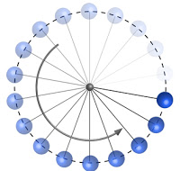

Posición, trayectoria y desplazamiento
El camino que sigue un cuerpo al cambiar su posición es lo que llamamos trayectoria

Depende del sistema de referencia empleado

Tipos de movimientos
Un movimiento es rectilíneo si la trayectoria del cuerpo es una línea recta

Un movimiento es curvilíneo si la trayectoria del cuerpo es una línea curva

Sistema de referencia
Se elige un sistema de coordenadas cartesianas, de tal modo que uno de sus ejes coincida
con la trayectoria del objeto
Distancia recorrida
Es la longitud del camino recorrido
Si la trayectoria del móvil es una línea recta, la distancia recorrida (s) se puede
determinar en función de las posiciones inicial (x0) y final (x) por la siguiente ecuación:
$$s = x - x_{0}$$
$$d = x - x_{0}$$
Desplazamiento
Describe el cambio de posición de un objeto durante su movimiento
Se representa por un vector cuyo origen se ubica en la posición inicial y el extremo señala la posición final
Determina:
a) La distancia recorrida
b)El desplazamiento total recorrido